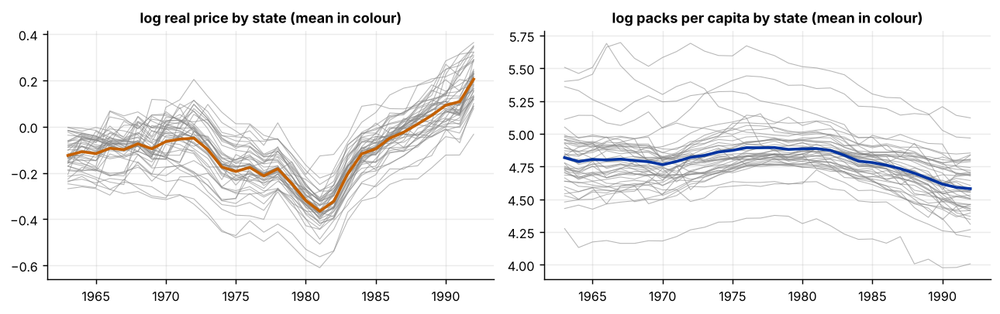

Step 1The question and the model
Panel regressions are often used to estimate a demand elasticity with state and year effects. Our question is: how responsive is cigarette consumption to the real price, once we remove permanent differences between states and shocks common to all states? The model is
where \(\alpha_i\) is a state effect and \(\lambda_t\) a year effect. The point estimate is the easy part. Most of the work in a paper is the standard error: observations from the same state are correlated over time, and observations from the same year are correlated across states, so the usual formula is too optimistic.
| Symbol | Variable in the file | Definition |
|---|---|---|
| \(\ln q_{it}\) | log_sales |
log cigarette packs per capita |
| \(\ln p_{it}\) | log_price |
log real price per pack (price divided by the CPI) |
| \(\ln y_{it}\) | log_income |
log real per-capita disposable income |
| \(\alpha_i,\lambda_t\) | state and year effects |
Before you estimate anything
Decide what the effects are for and who is correlated with whom. State effects remove time-invariant differences, year effects remove common shocks. The clustering level is a separate choice and follows the sampling or treatment design: if a policy varies by state, cluster by state. This guide treats the elasticity as a descriptive estimate: prices respond to demand, so a causal claim would need an instrument or a policy change.
How to write it: model section
We estimate a log-linear demand equation for cigarettes with state and year fixed effects for 46 U.S. states over 1963–1992. The coefficient of interest is the price elasticity. Standard errors are clustered by state, which allows arbitrary serial correlation within a state, and we check them against two-way clustering and a wild cluster bootstrap.
Step 2Load the data and see where the variation is
import warnings; warnings.filterwarnings("ignore")
import numpy as np, pandas as pd
import matplotlib.pyplot as plt
import statsmodels.api as sm
d = pd.read_csv("cigar.csv").sort_values(["state", "year"]).reset_index(drop=True)
d["year"] = d.year + 1900
N, T = d.state.nunique(), d.year.nunique()
print(f"{N} states x {T} years = {len(d)} observations (balanced: {len(d) == N * T})")
print(d[["log_sales", "log_price", "log_income"]].describe().round(3).loc[["mean", "std", "min", "max"]].T)
# how much of each variable's variance is between states, between years, and left after removing both
def two_way_demean(s):
return s - s.groupby(d.state).transform("mean") - s.groupby(d.year).transform("mean") + s.mean()
rows = []
for v in ["log_sales", "log_price", "log_income"]:
tot = d[v].var()
btw_s = d[v].groupby(d.state).transform("mean").var() / tot
btw_y = d[v].groupby(d.year).transform("mean").var() / tot
rows.append((v, btw_s, btw_y, two_way_demean(d[v]).var() / tot))
print("\nShare of variance")
print(pd.DataFrame(rows, columns=["variable", "between states", "between years", "left after two-way demeaning"]).round(3).to_string(index=False))
fig, ax = plt.subplots(1, 2, figsize=(10, 3.2))
for s_, g in d.groupby("state"):
ax[0].plot(g.year, g.log_price, color="#888", lw=.6, alpha=.6); ax[1].plot(g.year, g.log_sales, color="#888", lw=.6, alpha=.6)
ax[0].plot(d.groupby("year").log_price.mean(), color="#c46000", lw=2); ax[1].plot(d.groupby("year").log_sales.mean(), color="#0033a0", lw=2)
ax[0].set_title("log real price by state (mean in colour)"); ax[1].set_title("log packs per capita by state (mean in colour)")
plt.tight_layout()46 states x 30 years = 1380 observations (balanced: True)
mean std min max
log_sales 4.793 0.225 3.978 5.697
log_price -0.106 0.152 -0.610 0.364
log_income 4.545 0.210 3.766 5.117
Share of variance
variable between states between years left after two-way demeaning
log_sales 0.677 0.151 0.173
log_price 0.226 0.670 0.104
log_income 0.488 0.469 0.043
How to read it
The panel is balanced: 46 states and 30 years, 1,380 observations. Prices and sales differ a lot between states (68% of the variance of log sales is between states) and prices also move together over time (67% of the variance of log price is between years). After removing both state and year means, only 17% of the variance of sales and 10% of the variance of price is left. The price coefficient is estimated from this small remaining variation, which is why both sets of effects matter.
Step 3Estimate with state and year effects
y = d.log_sales
Xc = d[["log_price", "log_income"]]
pooled = sm.OLS(y, sm.add_constant(Xc)).fit()
fe_s = sm.OLS(y, pd.concat([Xc, pd.get_dummies(d.state, prefix="s", drop_first=True).astype(float)], axis=1).pipe(sm.add_constant)).fit()
D = pd.concat([Xc, pd.get_dummies(d.state, prefix="s", drop_first=True).astype(float), pd.get_dummies(d.year, prefix="y", drop_first=True).astype(float)], axis=1)
twfe = sm.OLS(y, sm.add_constant(D)).fit()
# the same coefficients by demeaning (Frisch-Waugh-Lovell): no dummies needed
yt = two_way_demean(y); Xt = pd.concat([two_way_demean(d[c]) for c in Xc], axis=1)
b_fwl = np.linalg.lstsq(Xt.values, yt.values, rcond=None)[0]
tab = pd.DataFrame({"pooled OLS": pooled.params[Xc.columns], "state FE": fe_s.params[Xc.columns], "state + year FE": twfe.params[Xc.columns]})
print("Coefficients")
print(tab.round(3).to_string())
print("\nTwo-way demeaning gives the same coefficients:", dict(zip(Xc.columns, b_fwl.round(3))))
print(f"R-squared: pooled {pooled.rsquared:.3f}, state FE {fe_s.rsquared:.3f}, two-way {twfe.rsquared:.3f}")Coefficients
pooled OLS state FE state + year FE
log_price -0.859 -0.702 -1.035
log_income 0.268 -0.011 0.529
Two-way demeaning gives the same coefficients: {'log_price': np.float64(-1.035), 'log_income': np.float64(0.529)}
R-squared: pooled 0.321, state FE 0.853, two-way 0.895How to read it
The price elasticity is −0.86 in pooled OLS, −0.70 with state effects and −1.04 with state and year effects. Income has a coefficient of 0.27 in the pooled model, about zero (−0.01) with state effects and 0.53 with both. The coefficients change a lot with the effects, which tells us the omitted state and year components are correlated with price and income. The two-way demeaned regression gives the same numbers as the dummy-variable regression (−1.035 and 0.529). R-squared rises from 0.32 to 0.90, but most of that comes from the effects themselves. The next step is the more important one: how precise are these numbers?
Step 4Choose the standard errors
groups_s = d.state.values; groups_t = d.year.values
res = {}
res["iid (default)"] = twfe
res["HC1 (robust)"] = sm.OLS(y, sm.add_constant(D)).fit(cov_type="HC1")
res["cluster by state"] = sm.OLS(y, sm.add_constant(D)).fit(cov_type="cluster", cov_kwds={"groups": pd.factorize(groups_s)[0]})
res["cluster by year"] = sm.OLS(y, sm.add_constant(D)).fit(cov_type="cluster", cov_kwds={"groups": pd.factorize(groups_t)[0]})
res["two-way (state, year)"] = sm.OLS(y, sm.add_constant(D)).fit(cov_type="cluster", cov_kwds={"groups": np.column_stack([pd.factorize(groups_s)[0], pd.factorize(groups_t)[0]])})
rows = []
for k, r in res.items():
rows.append((k, r.bse["log_price"], r.params["log_price"] / r.bse["log_price"], r.bse["log_income"], r.params["log_income"] / r.bse["log_income"]))
print("Standard errors for the two-way fixed-effects model")
print(pd.DataFrame(rows, columns=["method", "s.e. price", "t price", "s.e. income", "t income"]).round(3).to_string(index=False))
# is there serial correlation within states? AR(1) coefficient of the residuals
e = twfe.resid.values.reshape(N, T)
rho = (e[:, 1:] * e[:, :-1]).sum() / (e[:, :-1] ** 2).sum()
print(f"\nResidual autocorrelation within states: {rho:.2f}")Standard errors for the two-way fixed-effects model
method s.e. price t price s.e. income t income
iid (default) 0.042 -24.926 0.047 11.346
HC1 (robust) 0.061 -17.087 0.059 8.917
cluster by state 0.223 -4.647 0.167 3.163
cluster by year 0.062 -16.799 0.083 6.390
two-way (state, year) 0.223 -4.641 0.177 2.990
Residual autocorrelation within states: 0.83How to read it
The standard error of the price coefficient is 0.042 with the default formula, 0.061 with heteroskedasticity-robust errors and 0.223 when clustered by state, five times the default. The t-statistic falls from −24.9 to −4.6. The reason is serial correlation: the residuals of a state have an autocorrelation of 0.83, so 30 yearly observations of a state carry much less information than 30 independent ones. Clustering by year changes little (0.062), and two-way clustering (0.223 for price, 0.177 for income) is almost the same as clustering by state, so the dependence that matters is within states, not within years. We report state-clustered errors, with 46 clusters. The income coefficient stays significant (t = 3.2).
Step 5The wild cluster bootstrap
rng = np.random.default_rng(11)
st_idx = pd.factorize(d.state)[0]
Xfull = sm.add_constant(D).values; names = list(sm.add_constant(D).columns); k = names.index("log_price")
yv = y.values
def cluster_t(yv_, Xfull_, k_, idx):
b = np.linalg.lstsq(Xfull_, yv_, rcond=None)[0]; e = yv_ - Xfull_ @ b
XtXi = np.linalg.pinv(Xfull_.T @ Xfull_)
S = np.zeros((Xfull_.shape[1],) * 2)
for g in range(idx.max() + 1):
s = Xfull_[idx == g].T @ e[idx == g]; S += np.outer(s, s)
G = idx.max() + 1; n_, p_ = Xfull_.shape
V = XtXi @ S @ XtXi * G / (G - 1) * (n_ - 1) / (n_ - p_)
return b[k_], np.sqrt(V[k_, k_]), e
b_hat, se_hat, _ = cluster_t(yv, Xfull, k, st_idx); t_hat = b_hat / se_hat
# impose the null on the price coefficient, then resample with Rademacher weights drawn by state
X0 = np.delete(Xfull, k, axis=1); b0 = np.linalg.lstsq(X0, yv, rcond=None)[0]; fit0 = X0 @ b0; e0 = yv - fit0
G = st_idx.max() + 1; tb = []
for _ in range(999):
w = rng.choice([-1.0, 1.0], G)[st_idx]
ys = fit0 + e0 * w
bb, ss, _ = cluster_t(ys, Xfull, k, st_idx); tb.append(bb / ss)
tb = np.array(tb)
p_boot = (np.abs(tb) >= abs(t_hat)).mean()
print(f"Price coefficient {b_hat:.3f}, cluster-robust t = {t_hat:.2f} (normal p = {2 * (1 - __import__('scipy').stats.norm.cdf(abs(t_hat))):.4f}, t(G-1) p = {2 * __import__('scipy').stats.t.sf(abs(t_hat), G - 1):.4f})")
print(f"Wild cluster bootstrap-t p-value (999 draws, Rademacher, null imposed): {'< 0.001' if p_boot < .001 else format(p_boot, '.3f')}")
print("Bootstrap 2.5% and 97.5% quantiles of t:", np.percentile(tb, [2.5, 97.5]).round(2))Price coefficient -1.035, cluster-robust t = -4.65 (normal p = 0.0000, t(G-1) p = 0.0000) Wild cluster bootstrap-t p-value (999 draws, Rademacher, null imposed): < 0.001 Bootstrap 2.5% and 97.5% quantiles of t: [-1.91 1.91]
How to read it
With 46 state clusters the asymptotic approximation should be reasonable, and the wild cluster bootstrap agrees. The cluster-robust t-statistic is −4.65, the bootstrap p-value is below 0.001 (none of 999 draws exceeds it), and the bootstrap distribution of the t-statistic has 2.5% and 97.5% quantiles of ±1.91, close to the normal ±1.96. With fewer clusters or a few very large ones these quantiles would be wider and the bootstrap p-value would be larger than the normal one. Always report it when the number of clusters is below about 40.
Step 6A placebo test: how wrong are the default standard errors?
rng = np.random.default_rng(5)
yd = two_way_demean(y).values.reshape(N, T) # the outcome after removing state and year effects
rej = {"iid": 0, "HC1": 0, "cluster by state": 0}; R = 400
for _ in range(R):
# a fake regressor: a persistent AR(1) series with no relation to the outcome, different for each state
x = np.zeros((N, T)); u = rng.standard_normal((N, T))
for t_ in range(1, T): x[:, t_] = .8 * x[:, t_ - 1] + u[:, t_]
x = x - x.mean(0, keepdims=True) - x.mean(1, keepdims=True) + x.mean()
xv, yv_ = x.ravel(), yd.ravel()
b = (xv @ yv_) / (xv @ xv); e = yv_ - b * xv
se_iid = np.sqrt(e @ e / (len(e) - N - T) / (xv @ xv))
se_hc = np.sqrt(((xv * e) ** 2).sum()) / (xv @ xv)
sc = np.array([(x[i] * e.reshape(N, T)[i]).sum() for i in range(N)])
se_cl = np.sqrt((sc ** 2).sum() * N / (N - 1)) / (xv @ xv)
for nm, s_ in [("iid", se_iid), ("HC1", se_hc), ("cluster by state", se_cl)]:
rej[nm] += abs(b / s_) > 1.96
print(f"Share of true-null 5% tests that reject, {R} placebo regressors")
for k_, v in rej.items(): print(f" {k_:17s} {v / R:6.1%}")Share of true-null 5% tests that reject, 400 placebo regressors iid 36.0% HC1 37.5% cluster by state 6.0%
How to read it
We replace the price with a persistent random series that has nothing to do with sales (an AR(1) with coefficient 0.8, drawn separately for each state) and run 400 regressions on the real outcome. A correct 5% test should reject about 5% of the time. The default standard errors reject 36% of the time and the heteroskedasticity-robust ones 37.5%, so seven in ten significant results would be false. Clustering by state rejects 6.0%, close to the nominal 5%, with some simulation error (about one percentage point with 400 draws). Robust standard errors alone do not help, because the problem is correlation over time, not unequal variances.
Step 7A warning: two-way fixed effects with staggered policies
rng = np.random.default_rng(3)
n, T2 = 60, 12
adopt = rng.choice([4, 7, 10, 99], n, p=[.25, .25, .25, .25]) # adoption year; 99 = never treated
a_i, l_t = rng.normal(0, 1, n), np.linspace(0, 1, T2)
tt = np.arange(1, T2 + 1)
def make(effect):
treated = (tt[None, :] >= adopt[:, None]).astype(float)
rel = np.where(treated == 1, tt[None, :] - adopt[:, None], -1) # years since adoption
tau = effect(rel) * treated
return treated, tau, a_i[:, None] + l_t[None, :] + tau + rng.normal(0, .3, (n, T2))
def twfe_coef(treated, yy):
dm = lambda a: a - a.mean(1, keepdims=True) - a.mean(0, keepdims=True) + a.mean()
return (dm(treated).ravel() @ dm(yy).ravel()) / (dm(treated).ravel() @ dm(treated).ravel())
out = []
for lab, eff in [("constant effect = 1.0", lambda r: np.ones_like(r, dtype=float)),
("effect grows 0.5 per year after adoption", lambda r: .5 * (r + 1))]:
tr, tau, yy = make(eff)
out.append((lab, tau[tr == 1].mean(), twfe_coef(tr, yy)))
print(pd.DataFrame(out, columns=["design", "average effect on treated", "TWFE estimate"]).round(2).to_string(index=False)) design average effect on treated TWFE estimate
constant effect = 1.0 1.00 1.0
effect grows 0.5 per year after adoption 1.92 0.9How to read it
When all states adopt a policy at the same time, the fixed-effects estimate is a clean comparison. With staggered adoption the estimate is a weighted average of comparisons, and some of them use already treated states as controls. In the simulation, adoption is in year 4, 7, 10 or never. If the effect is constant at 1.0, the TWFE estimate is 1.0. If the effect grows by 0.5 per year after adoption, the average effect on the treated is 1.92 but the TWFE estimate is 0.9, less than half of it. The estimate is not wrong by accident: late-adopting states are compared with early adopters whose effect is still growing. The next guide, on event studies, shows estimators that avoid this.
How to write it: results
We estimate the price elasticity of cigarette demand in 46 U.S. states over 1963–1992 with state and year fixed effects. The elasticity is −1.04, against −0.86 in pooled OLS and −0.70 with state effects only. Standard errors clustered by state are 0.223 (t = −4.65), five times the default value of 0.042, because residuals are highly autocorrelated within states (0.83). Two-way clustering gives the same result and a wild cluster bootstrap gives a p-value below 0.001. In a placebo experiment with persistent random regressors, the default standard errors reject a true null in 36% of the cases and state-clustered errors in 6%. The estimate should be read as a descriptive elasticity, because prices respond to demand.
Step 8What to report in the paper
| Item | What to show |
|---|---|
| Effects | which fixed effects are included, and why both |
| Clustering | the level, the number of clusters, and the reason for the choice |
| Robustness of inference | two-way clustering or the wild cluster bootstrap p-value, especially with fewer than about 40 clusters |
| Serial correlation | the residual autocorrelation, as the motivation for clustering |
| Staggered treatment | if units adopt a policy at different dates, an event-study estimator instead of one TWFE coefficient |
Common mistakes
- Reporting default standard errors in a panel. They ignore correlation within units and can reject a true null far too often (see the placebo).
- Clustering at the wrong level. Cluster at the level where treatment or shocks are correlated, not at the level you like the result at.
- Trusting cluster-robust t-statistics with few clusters. Below about 30–40 clusters use the wild cluster bootstrap or t(G−1) critical values.
- Two-way clustering with few years. The year dimension needs many clusters too. Check that the year-level variance is not estimated from only a handful of periods.
- Reading one TWFE coefficient as the average treatment effect when adoption is staggered. With effects that vary over time it can be badly biased, and in extreme cases wrongly signed.
- Calling the elasticity causal. Fixed effects remove fixed differences only, not price responses to demand.